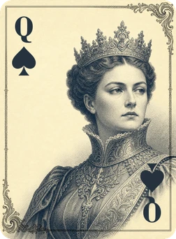

Posez n'importe quelle carte n'importe où. Inventez un jeu, retrouvez un classique de famille, testez une idée — ou faites simplement un joyeux désordre.

Comment ça marche
Trois gestes. Douze modes.
Faites glisser pour déplacer, touchez deux fois pour retourner, et lâchez près d'un dépôt pour vous y caler. C'est tout ce qu'il faut. Pour aller plus loin, les modes de la barre d'outils changent ce que fait votre prochain geste.
Pour un seul geste
Cliquez sur une puce ou appuyez sur sa touche. Le mode s'applique à votre prochain glisser ou double appui, puis se désactive tout seul.
Ou gardez-le actif
Maintenez Ctrl en appuyant sur la touche, ou faites un appui long sur la puce, et le mode reste actif jusqu'à ce que vous le désactiviez.
Combinez-les
Grab fixe un nombre de cartes que Fish, Spread et Order reprennent ensuite. Rotate fait pivoter tout ce que All, Spread, Fish ou Grab soulève.
Modes de table
Ce qui part avec la carte
Un glisser soulève la carte que vous touchez et tout ce qui est étalé par-dessus. Ces modes changent ce qui voyage.
F
Fish
Tirez une seule carte d'une pile. Les cartes posées dessus restent en place ; dans un dépôt, les autres comblent le vide.
Regardez la dame de cœur glisser de sous le six de trèfle et tomber dans la pile vide, tandis que l'éventail se referme derrière elle.
Enregistré dans Cardz · Fish
G
Grab
Prenez les cartes du dessus d'une pile en un seul paquet. Cliquez sur la puce pour passer de 2 à 3 puis 5, ou appuyez sur un chiffre de 2 à 9. Avec Fish, le paquet peut venir de n'importe où dans la pile.
Regardez trois cartes rouges sortir ensemble du milieu de l'éventail, et les cartes de part et d'autre rester où elles étaient.
Enregistré dans Cardz · Grab + Fish
T
Trawl
Faites glisser à travers des cartes éparses : chacune rejoint votre glisser quand vous passez dessus. Les cartes d'un dépôt ne sont jamais ramassées.
Regardez la dame de cœur balayer la table vers la gauche et ramasser trois cartes éparses en chemin.
Enregistré dans Cardz · Trawl
A
All
Ramassez toutes les cartes de la pile qui se touchent, aussi désordonnée soit-elle. Sur un double appui, retournez tout le groupe d'un coup.
Comment les cartes se posent
Donnez forme aux cartes pendant qu'elles bougent : étalez-les, rassemblez-les, ou mettez-en une à sa place.
S
Spread
Faites glisser la carte du dessus d'une pile, et la pile s'ouvre en éventail derrière elle, dans la direction où vous glissez. La carte du dessous reste en place.
Regardez la pile s'ouvrir derrière la dame de cœur pendant qu'on la fait glisser vers la droite.
Enregistré dans Cardz · Spread
C
Corral
Faites glisser une carte d'un amas qui se chevauche, et les autres se rassemblent autour d'elle en pile, colonne, rangée ou éventail. Clic droit sur la puce pour choisir la forme.
Regardez quatre cartes qui se chevauchent se rassembler sous la dame de cœur en une pile bien carrée. Le sept de trèfle n'en touche aucune, alors il reste en place.
Enregistré dans Cardz · Corral
D
Order
Faites glisser une carte le long de son propre éventail jusqu'à une nouvelle place. Ses voisines s'écartent pour lui faire de la place.
Regardez la dame de cœur passer du milieu de l'éventail à son extrémité gauche pendant que les autres cartes s'écartent.
Enregistré dans Cardz · Order
R
Rotate
Faites pivoter une carte pendant que vous la glissez. Combinez-le avec All, Spread, Fish ou Grab pour faire pivoter tout un groupe.
Dessus ou dessous
Chaque glisser se pose par-dessus, sauf si vous en décidez autrement.
V
Dive
Envoyez les cartes que vous glissez à l'arrière plutôt qu'à l'avant, pour qu'elles se glissent sous ce sur quoi vous les lâchez.
Ce que fait un double appui
Un double appui retourne une carte. Ces modes lui font faire autre chose.
L
Shuffle
Le prochain double appui mélange la pile sur place au lieu de la retourner. Son second réglage trie la pile dans l'ordre.
O
Orient
Le prochain double appui met toutes les cartes face visible, ou face cachée avec son second réglage. Range une pile mélangée en un seul appui.
All et Grab fonctionnent ici aussi : agissez sur toute la pile qui se touche, ou seulement sur les cartes du dessus.
Keep
Disposez. Distribuez. Gardez.
Keep enregistre la disposition d'une table et sa donne.
P
Dépôt
Choisissez Dépôt, puis cliquez sur le tapis pour y poser un emplacement sans règles : une pile, une colonne, une rangée ou un éventail. Posez-le sur une pile en désordre et les cartes prennent sa forme. Clic droit sur la puce pour choisir la forme.
Regardez un emplacement en éventail tomber sur une pile en désordre, et chaque carte prendre sa forme.
Enregistré dans Cardz · Dépôt
Faites de la place pour votre jeu
Posez un dépôt pour chaque pile dont votre jeu a besoin.
Distribuez
Distribuez-y des cartes depuis la pioche, face visible ou face cachée.
Gardez-le
Choisissez Keep et nommez votre table. Laissez Distribuer les cartes comme elles sont posées coché pour enregistrer aussi la donne.
Revenez jouer
Retrouvez-la dans Vos jeux. Chaque nouvelle partie mélange et redistribue votre table.
Une donne gardée, c'est sa forme, pas ses cartes : trois faces cachées et une face visible sur cette pile, jamais l'as de pique. Les cartes laissées libres sur le tapis n'en font pas partie.